Stream deck layout (5 × 3, two pages)
For the VSD Craft deck. Every button sends Ctrl + Shift + a letter or number, which works when the control page or the projector window is in front (same computer). The bottom row is the same on both pages (outlined in yellow), and the page-switch button is in the top-right corner of both.
Page 1: main


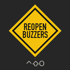
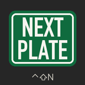

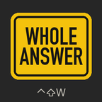
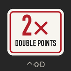
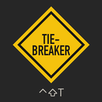
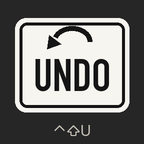

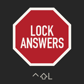
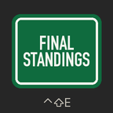
Page 2: speed round
Pick the team, press START, then CORRECT or PASS for each plate. MAIN PAGE goes back.
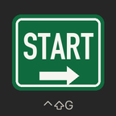
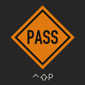
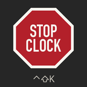


Download
layout.png (page 1) · layout-speed.png (page 2)


Icons: back.png · correct.png · double.png · final.png · go.png · join.png · lock.png · next.png · pass.png · reopen.png · reveal.png · speedpage.png · standings.png · start.png · stopclock.png · team1.png · team2.png · team3.png · team4.png · team5.png · tie.png · undo.png · whole.png · wrong.png


Set it up in VSD Craft
- For each key button: drag the Hotkey action onto it (System group), click the hotkey box and press the combination shown, e.g. Ctrl + Shift + G. On a Mac that's the Control key, not Command.
- Click the button's icon and choose the matching PNG.
- Make page 2 (a new page or folder in VSD Craft). On page 1, set the top-right SPEED ROUND button to open it; on page 2, set the top-right MAIN PAGE button to go back.
- Copy the bottom row from page 1 to page 2 so they match exactly.
Then click into the control page (or projector window) once, so the browser is in front, and the buttons run the game.